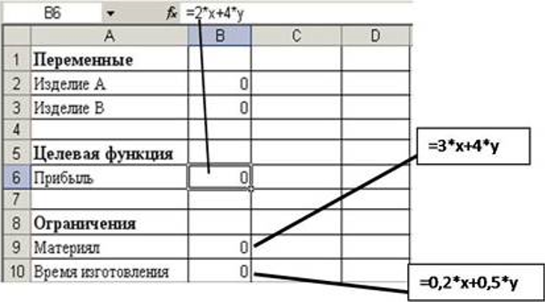
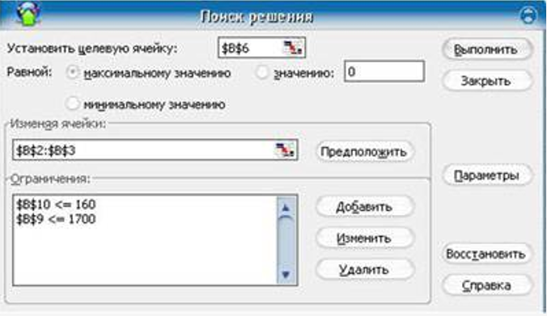
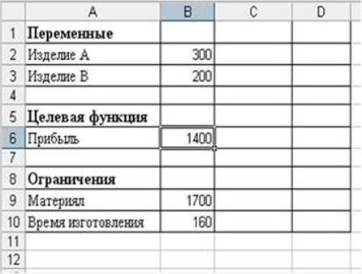
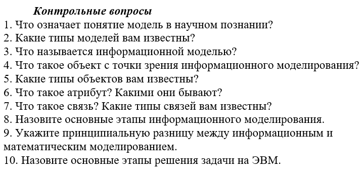

Задания для 1 курса. Практическое занятие №27
Математическое моделирование на компьютере
Математическое моделирование – это связь между объектами в виде математических соотношений. При этом информационные объекты представляются в виде математических объектов. Этапы вычислительного эксперимента: 1) построение математической модели в виде формальной системы (исчисления); 2) построение абстрактного вычислительного алгоритма (тип Р - полиномиальный, тип NP – недетерминированный полиномиальный, тип Е – экспоненциальный); 3) построение технической (компьютерной) модели Организация вычислительного эксперимента – это метод решения задач определенного класса (физических, математических, химических и т.д.) с использованием компьютера. Разрабатываемая модель должна учитывать возможности исполнителя, т.е. будет ли он получать результаты из исходных данных, используя построенную модель и алгоритм. Компьютерное моделирование основано на применении программного обеспечения, которое должно в максимальной степени соответствовать построенной модели. Исполнитель ориентирован на компьютер (строгие связи между данными). Если исполнитель только вычисляет, имеем математическую компьютерную модель. Схема моделирования на компьютере: Примеры компьютерных моделей: модель Паскаля, модель Бэббиджа, модель Тьюринга, модель Поста, модель фон Неймана, модель Кодда, модель Пейперта (система LOGO). Компьютерное моделирование в физике Численное моделирование в физике называют вычислительным экспериментом, поскольку оно имеет много общего с лабораторным (натурным) экспериментом: образец – модель; физический прибор – программа для компьютера; калибровка прибора – тестирование программы; измерение – расчет; анализ данных – в обоих случаях. Примеры: * свободное падение тела с учетом сопротивления среды; * движение тела, брошенного под углом к горизонту; * движение тела с переменной массой (старт ракеты); * движение небесных тел; * движение заряженных частиц; * колебания математического маятника; * моделирование явлений и процессов в приближении сплошной среды; * моделирование процесса теплопроводности. Моделирование случайных процессов Событие называется случайным, если оно достоверно непредсказуемо. Случайность положена в основу методов получения решения посредством проб и ошибок, посредством случайного поиска. Естественный отбор в природных процессах также реализует метод проб и ошибок. Примеры: * генерация чисел, равновероятно распределенных на некотором отрезке (метод вычетов, метод отбора-отказа); * очередь к «продавцу»; * вычисление площадей (метод Монте-Карло); * модель случайного блуждания («пьяница», броуновское движение). Компьютерная модель. Решение задачи в Excel. 1. Создайте новую рабочую книгу, сохраните ее под именем Chll.xls в своей папке. 2. Дайте первому листу имя "Полки". 3. Введите в ячейки рабочего листа информацию (рисунок 1). Ячейкам В2 и ВЗ присвойте имена х и у. В ячейках С6, С9 и С10 представлены формулы, занесенные в соответствующие ячейки столбца В.  4. выделите ячейку (B6), в которой вычисляется целевая функция, и вызовите Решатель ("Сервис/ Поиск решения"). В диалоговом окне в поле ввода "Установить целевую ячейку:" уже содержится адрес ячейки с целевой функцией $В$6. 5. Установите переключатель: "Равной максимальному значению"; 6. Перейдите к полю ввода "Изменяя ячейки:". В нашем случае достаточно щелкнуть кнопку "Предположить" и в поле ввода появится адрес блока $В$2:$В$3. 7. Перейдите к вводу ограничений. Щелкнем кнопку "Добавить". Появится диалоговое окно "Добавление ограничения". 8. Поле ввода "Ссылка на ячейку:" укажите $В$9. 9. Правее расположен выпадающий список с условными операторами (раскройте его и посмотрите). Выберем условие <=; 10. В поле ввода "Ограничение:" введите число 1700. 11. Есть еще одно ограничение, поэтому, не выходя из этого диалогового окна, щелкнем кнопку "Добавить"(в соответствии с рисунком) и введем ограничение $В$10<=160. 12. Ввод ограничений закончен, поэтому нажмем "ОК". 13. Вновь окажемся в диалоговом окне "Поиск решения". Увидим введенные ограничения $В$10<=160 и $В$9<=1700. Справа имеются кнопки "Изменить" и "Удалить". С их помощью можем изменить ограничение или стереть его в соответствии с рисунком.  14. Щелкните кнопку "Параметры". Окажемся в диалоговом окне "Параметры поиска решения". Чтобы узнать назначение полей ввода этого окна, щелкнем кнопку "Справка". Менять ничего не будем, только установим два флажка: "Линейная модель" (так как наши ограничения и целевая функция являются линейными по переменным х и у) и "Неотрицательные значения" (для переменных х и у). Щелкнем "ОК" и окажемся в исходном окне. Самостоятельно добавьте ограничения, что переменная X и Y – целые Одним из таких инструментов является Поиск решения, который особенно удобен для решения так называемых "задач оптимизации". Если Вы раньше не использовали Поиск решения, то Вам потребуется установить соответствующую надстройку; 15. Полностью подготовив задачу оптимизации. Нажимаем кнопку "Выполнить". 16. Появляется диалоговое окно "Результаты поиска решения". В нем читаем сообщение "Решение найдено. Все ограничения и условия оптимальности выполнены." На выбор предлагаются варианты: "Сохранить найденное решение" или "Восстановить исходные значения". Выбираем первое. Можно также вывести отчеты: по результатам, по устойчивости, по пределам. Выделим их все, чтобы иметь представление о том, какая информация в них размещена. 17. После нажатия "ОК." вид таблицы меняется: в ячейках х и у появляются оптимальные значения. Числовые данные примера специально подобраны, поэтому в ответе получились круглые цифры: изделие А нужно выпускать в количестве 300 штук в неделю, а изделие В – 200 штук. Соответственно пересчитываются все формулы. Целевая функция достигает значения 1400, как показано на рисунке 5. 
Ответьте на контрольные вопросы: 
|